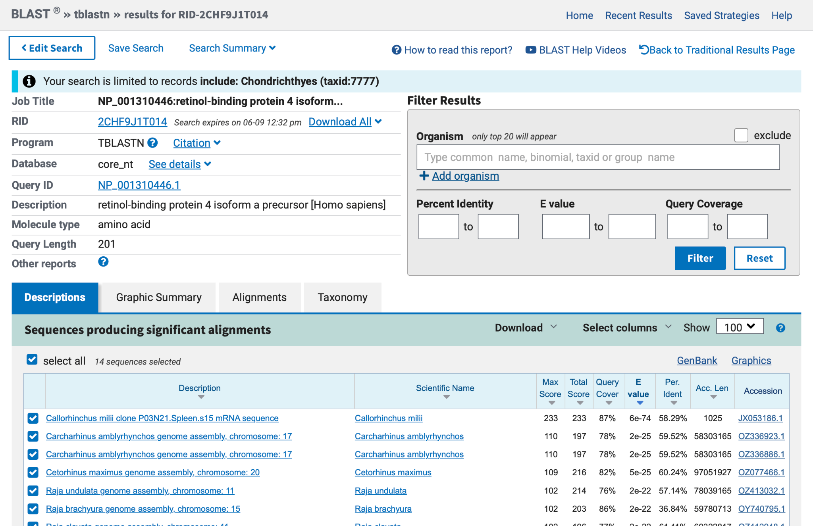
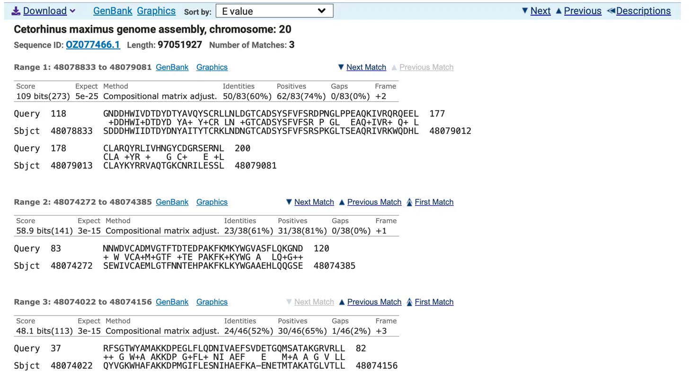
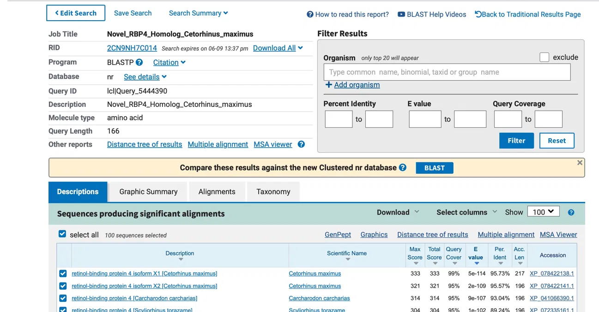
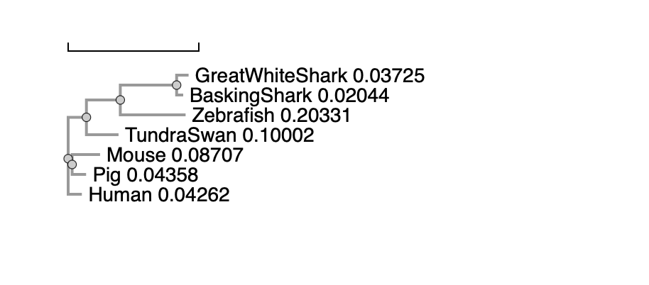
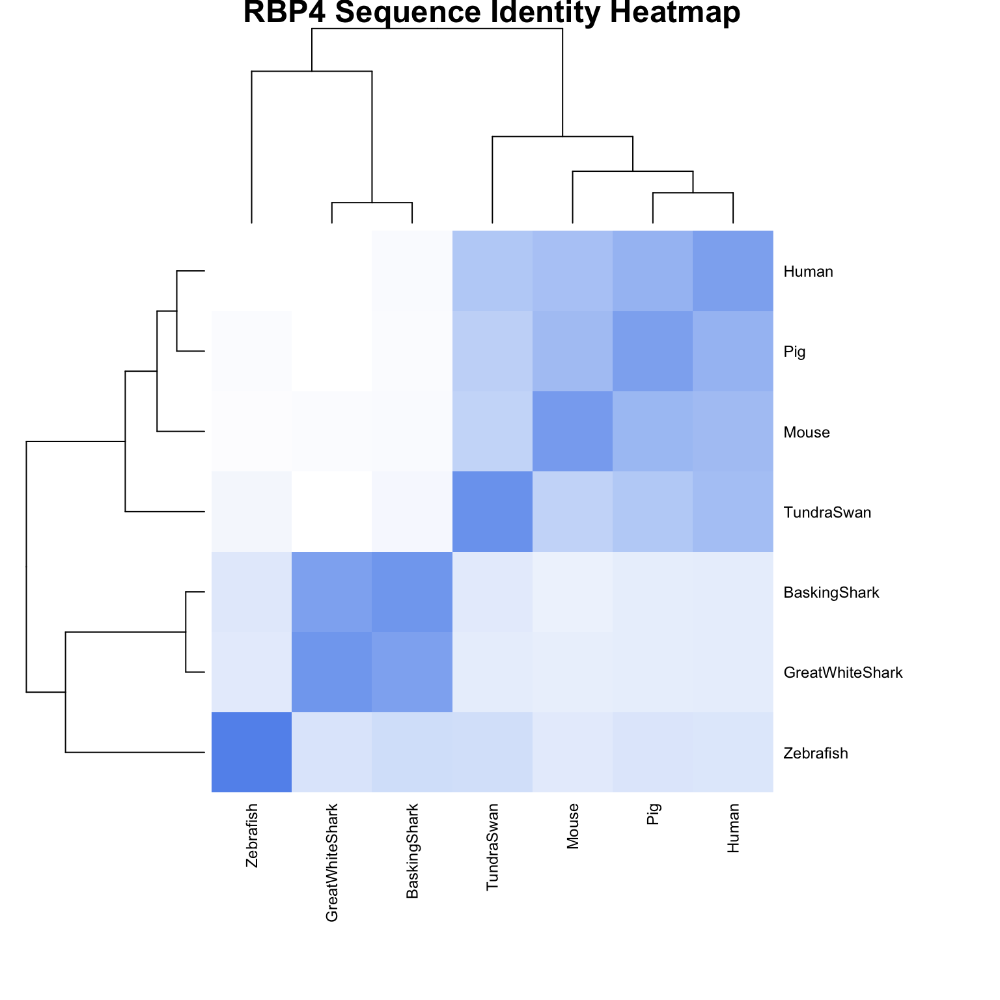
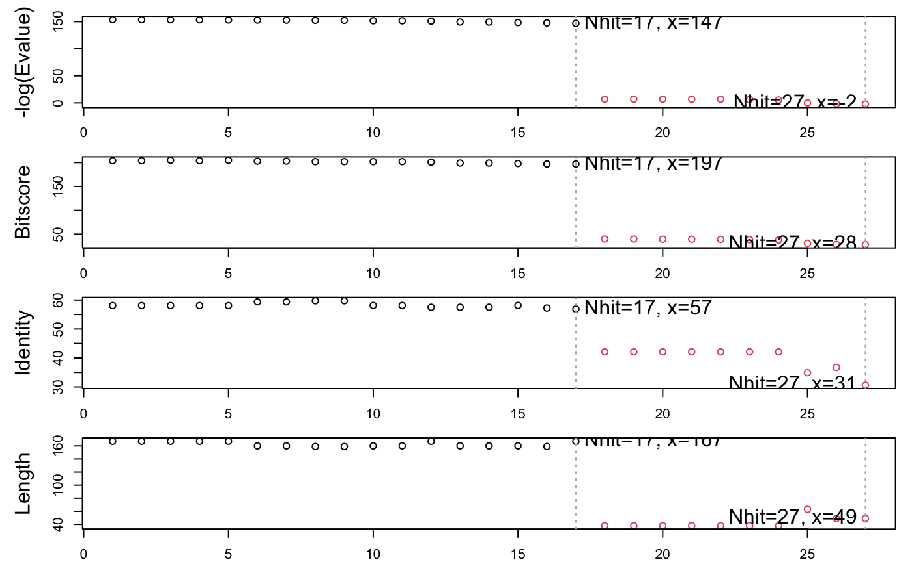
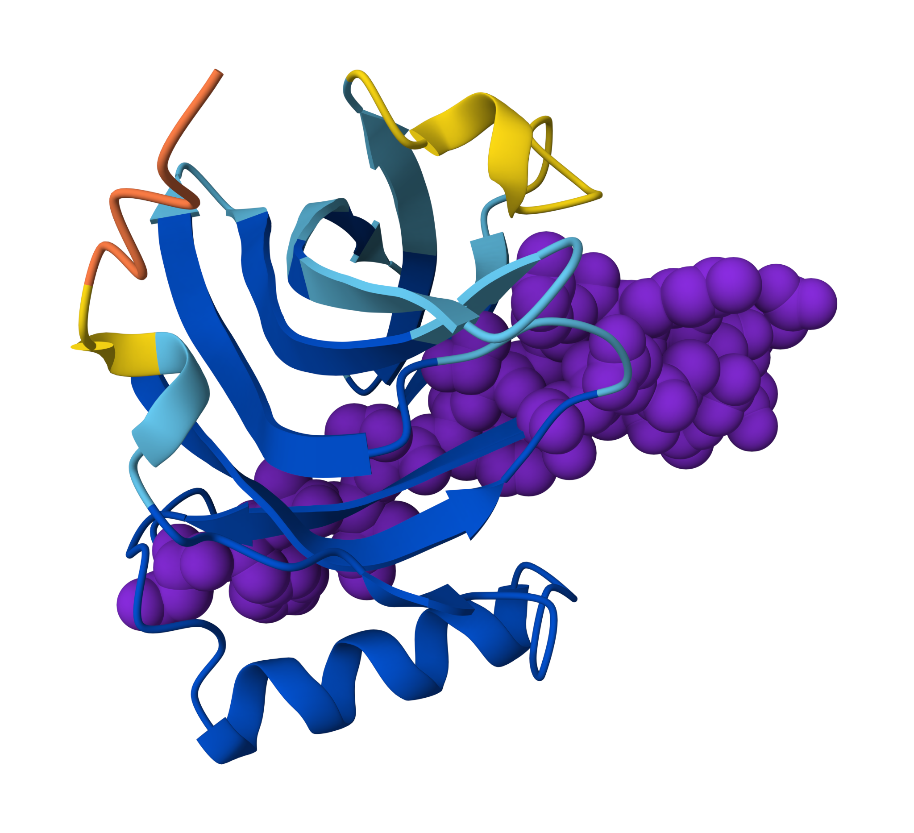
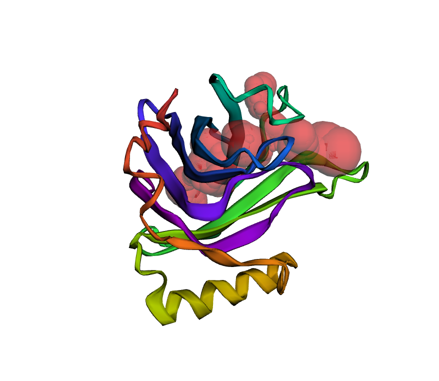
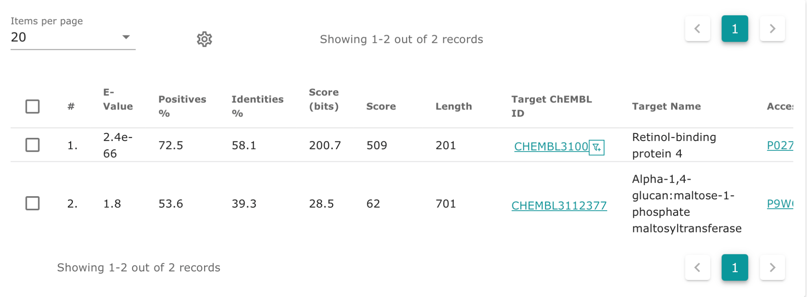
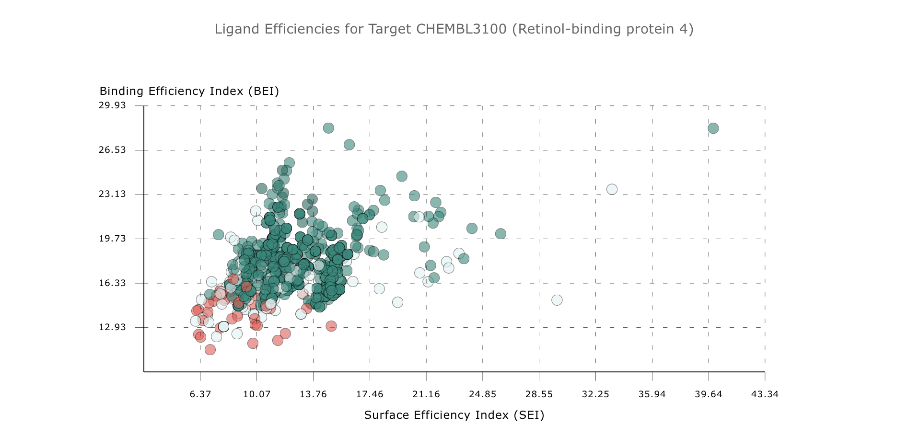

malsaiari@ucsd.edu
Name: Retinol-binding protein 4 (RBP4)
Species: Homo sapiens (human)
Accession number: NP_001310446.1
Function: RBP4 is a lipocalin family protein that acts as the primary transporter of retinol (vitamin A) through the bloodstream. It mobilizes retinol from hepatic stores and circulates it to target tissues throughout the body. To avoid renal loss, the RBP4-retinol complex binds transthyretin in plasma, forming a larger complex that is too big to be filtered out by the kidneys.
BLAST Method: tblastn was used, which takes a protein query sequence and searches it against a nucleotide database by translating the database in all six reading frames. This allows identification of homologous protein-coding regions within unannotated genomic DNA.
Database Searched: Nucleotide collection (core_nt)
Limits Applied: Search restricted to Chondrichthyes (taxid:7777); Models (XM/XP) excluded.

Match Selection: The selected match is the Cetorhinus maximus (basking shark) genome assembly, chromosome 20 (Accession: OZ077466.1), with 3 high-scoring pairs (HSPs) across the genomic sequence.
This hit was selected because it is a raw genomic sequence with no functional annotation in the description title, meeting the assignment criteria. The alignment statistics indicate clear homology to the query RBP4 protein without representing a perfect or previously annotated match, suggesting this is a novel unannotated homolog in the basking shark genome.

Alignment Statistics (Range 1, highest-scoring HSP):
Novel Protein Name: RBP4 homolog
Species: Cetorhinus maximus (basking shark)
The protein sequence below was obtained by extracting and ordering the subject lines from the three high-scoring pairs (HSPs) found in the tblastn alignment against chromosome 20 of the basking shark genome (Accession: OZ077466.1):
>Novel_RBP4_Homolog_Cetorhinus_maximus QYVGKWHAFAKKDPMGIFLESNIHAEFKAENETMTAKATGLVTLL SEWIVCAEMLGTFNNTEHPAKFKLKYWGAAEHLQQGSE SDDDHWIIDTDYDNYAITYTCRKLNDNGTCADSYSFVFSRSPKGLT SEAQRIVRKWQDHLCLAYKYRRVAQTGKCNRILESSL
This sequence was assembled by stitching together the Sbjct lines from each HSP in order of their genomic position (Range 3 → Range 2 → Range 1). The sequence does not begin with a methionine, which is expected given that only a partial coding region was captured in the genomic alignment.
Method: A blastp search was performed using the novel protein sequence from Q3 as the query against the non-redundant (nr) protein database at NCBI, with no organism restrictions applied.

Results: The top hit is retinol-binding protein 4 isoform X1 from Cetorhinus maximus (Accession: XP_078422138.1) with 95.73% identity and an E-value of 5e-114.
Conclusion: This protein is novel. The highest identity match is 95.73%, meaning this exact sequence has not been previously annotated in the database for Cetorhinus maximus. The strong similarity to RBP4 in related shark species confirms it is a genuine RBP4 homolog in the basking shark genome.
A multiple sequence alignment was generated using Clustal Omega with 7 RBP4 protein sequences from diverse species, including the novel basking shark sequence from Q3. Sequences were labeled by common species name rather than accession number to aid interpretation.
Species included:
| Species | Accession |
|---|---|
| Homo sapiens (human) | NP_001310446.1 |
| Mus musculus (mouse) | AAH31809.1 |
| Sus scrofa (pig) | NP_999222.1 |
| Danio rerio (zebrafish) | NP_570995.1 |
| Cygnus columbianus (tundra swan) | XP_082668518.1 |
| Carcharodon carcharias (great white shark) | XP_041066390.1 |
| Cetorhinus maximus (basking shark) | novel sequence from Q3 |
CLUSTAL O(1.2.4) multiple sequence alignment
GreatWhiteShark MV--QCKILGLLVVVLFSTSSCFAKSDCIVSNFQVKEDFNKTRYAGKWHAFAKKDPVGIF 58
BaskingShark ------------------------------------------QYVGKWHAFAKKDPMGIF 18
Zebrafish ---------MLRLCIAVCVLATCWAQDCQVSNFAVQQDFNRTRYQGTWYAVAKKDPVGLF 51
TundraSwan MAYTRKALPCLLLLALTFLGSSMAERDCRVSSFKVKENFDKNRYSGTWYATAKKDPEGLF 60
Mouse ------MEWVWALVLLAALG-GSAERDCRVSSFRVKENFDKARFSGLWYAIAKKDPEGLF 53
Human ------MKWVWALLLLAALGSGRAERDCRVSSFRVKENFDKARFSGTWYAMAKKDPEGLF 54
Pig ------MEWVWALVLLAALGA-QAERDCRVSSFRVKENFDKARFSGTWYAMAKKDPEGLF 53
:: * :* ***** *:*
GreatWhiteShark LESNIHAEFKAEN--ETMTAKATGLVTL-LPEWIVCAEMMGTFNNTEHPAKFKLKYWGAA 115
BaskingShark LESNIHAEFKAEN--ETMTAKATGLVTL-LSEWIVCAEMLGTFNNTEHPAKFKLKYWGAA 75
Zebrafish LLDNIVANFKVE-EDGTMTATAIGRVII-LNNWEMCANMFGTFEDTEDPAKFKMKYWGAA 109
TundraSwan LQDNVVAQFTVD-ENGQMSATAKGRVRLFLNNWDVCADMIGSFTDTEDPAKFKMKYWGVA 119
Mouse LQDNIIAEFSVEDEKGHMSATAKGRVRLLLSNWEVCADMVGTFTDTEDPAKFKMKYWGVA 113
Human LQDNIVAEFSVD-ETGQMSATAKGRVRL-INNWDVCADMVGTFTDTEDPAKFKMKYWGVA 112
Pig LQDNIVAEFSVD-ENGHMSATAKGRVRLLLNNWDVCADMVGTFTDTEDPAKFKMKYWGVA 112
* .*: *:*..: *:*.* * * : :* :**:*.*:* :**.*****:****.*
GreatWhiteShark EHLQQGN---DDHWIIDTDYDNYAITYTCRKLNDNGTCADSYSFVFSRDPKGLTSEAQRI 172
BaskingShark EHLQQGSESDDDHWIIDTDYDNYAITYTCRKLNDNGTCADSYSFVFSRSPKGLTSEAQRI 135
Zebrafish AYLQTGY---DDHWIIDTDYDNYAIHYSCRELDEDGTCLDGYSFIFSRHPDGLRPEDQAI 166
TundraSwan SFLQKGN---DDHWVVDTDYDTYALHYSCRQLNEDGTCADSYSFVFSRDPKGLPPEAQKI 176
Mouse SFLQRGN---DDHWIIDTDYDTFALQYSCRLQNLDGTCADSYSFVFSRDPNGLSPETRRL 170
Human SFLQKGN---DDHWIVDTDYDTYAVQYSCRLLNLDGTCADSYSFVFSRDPNGLPPEAQKI 169
Pig SFLQKGN---DDHWIIDTDYDTYAAQYSCRLQNLDGTCADSYSFVFARDPHGFSPEVQKI 169
.** * ****::*****.:* *:** : :*** *.***:*:* *.*: * : :
GreatWhiteShark VRKWQDHLCLAYKYRRVAQ-TGACP-------- 196
BaskingShark VRKWQDHLCLAYKYRRVAQ-TGKCNRILESSL- 166
Zebrafish VTQKKQDICFLGKYRRVAHTTGFCEAA------ 193
TundraSwan VRQRQIDLCLDRKYRVIVH-NGFCS-------- 200
Mouse VRQRQEELCLERQYRWIEH-NGYCQSRPSRNSL 202
Human VRQRQEELCLARQYRLIVH-NGYCDGRSERNLL 201
Pig VRQRQEELCLARQYRLITH-NGYCGK-SERNLL 200
* : : .:*: :** : : .* *
The alignment reveals conserved regions across all seven species, particularly in the core lipocalin domain, consistent with the shared retinol-binding function of RBP4. The basking shark novel sequence aligns well with the great white shark sequence, as expected given their close evolutionary relationship, while the zebrafish sequence shows the greatest divergence among the non-mammalian vertebrates.
A phylogenetic tree was generated from the multiple sequence alignment using Simple Phylogeny (EBI).

The FASTA-format alignment was read into R using the Bio3D package, a sequence identity matrix was calculated, and a heatmap was generated.

A BLAST search against the PDB was performed using the blast.pdb() function in R/Bio3D, with the human RBP4 sequence used as the query, as it has the highest identity to all other sequences in the alignment.

blast.pdb() showing E-value, bitscore, identity, and alignment length across hits.A second BLAST search against the PDB was performed using the novel basking shark RBP4 sequence as the query via blast.pdb(). The top 3 unique hits from different species are shown below, all solved by X-ray crystallography.
| PDB ID | E-value | Identity | Method | Resolution | Source |
|---|---|---|---|---|---|
| 1BRP_A | 1.79e-67 | 58.084% | X-ray | 2.50 Å | Homo sapiens |
| 1HBQ_A | 1.28e-66 | 58.125% | X-ray | 1.70 Å | Bos taurus |
| 1IIU_A | 1.45e-66 | 58.125% | X-ray | 2.50 Å | Gallus gallus |
The novel basking shark RBP4 sequence was submitted to the ColabFold AlphaFold2 notebook with default parameters. The rank 1 PDB model was visualized in Mol*, shown below as a cartoon colored by pLDDT quality score (blue = high confidence, red = low confidence), with conserved residues from the AlphaFold alignment highlighted as spacefill. The predicted structure adopts a beta-barrel fold consistent with the lipocalin family.

Largest predicted pocket (Pocket 1):

A Target search of ChEMBL using the novel sequence identified CHEMBL3100 (Retinol-binding protein 4) as the closest match with 58.1% identity and an E-value of 2.4e-66. This target has 1275 associated assays including binding (B) and functional (F) assay types, with substantial ligand efficiency data available as shown by the Binding Efficiency Index (BEI) vs Surface Efficiency Index (SEI) plot.


The basking shark RBP4 homolog shows moderate druggability. CASTpFold identified a well-defined binding pocket (volume 232 ų) consistent with the retinol-binding cavity conserved across lipocalin family members. ChEMBL records 1275 assays for human RBP4, including IC50 and binding data, suggesting inhibitors of the human ortholog could serve as starting points. The binding site residues are conserved across species in the Q5 alignment. Therapeutically, RBP4 inhibition has been explored for type 2 diabetes and metabolic syndrome, making this novel shark homolog a relevant comparative model.
BIMM 143, Spring 2026, UC San Diego